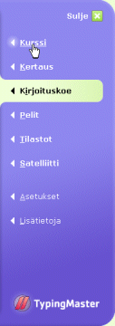

Kun olet käynyt kurssin läpi ja hallitset kymmensormitekniikan, voit tehdä saman kokeen uudelleen säännöllisin väliajoin seurataksesi taitojesi kehittymistä.
Jos haluat tehdä kokeen, valitse "Kirjoituskoe" oikeanpuoleisesta valikosta. Kokeen jälkeen valitse kohta "Kurssi" jatkaaksesi opiskelua.